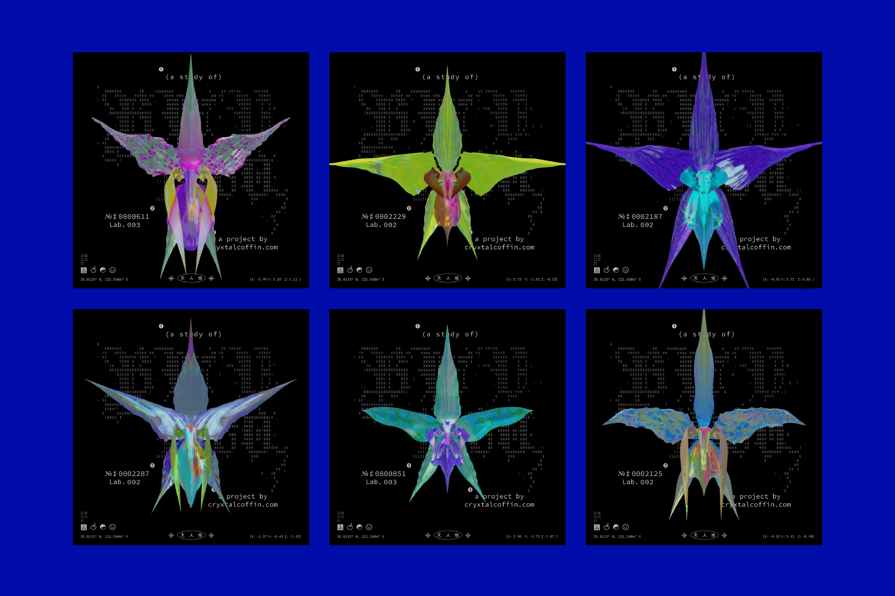
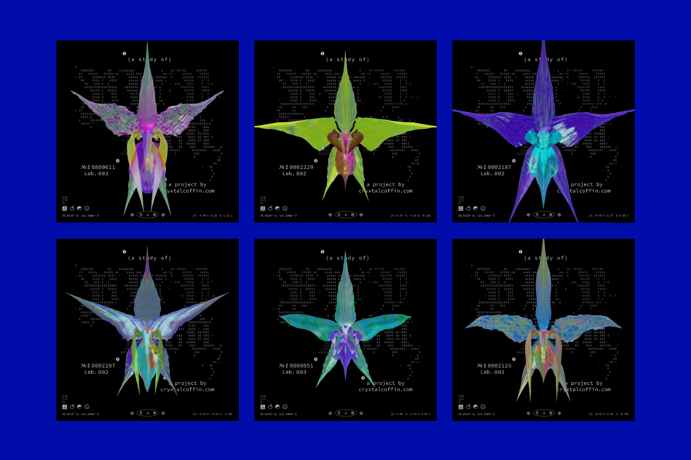

“Tao begot one; one begot two; two begot three; three begot all the myriad things.”
Tao Te Ching (The Classic of the Way and Virtue)
By modularizing the looks of plants, and binding the variables, this project made an humble attempt to imitate the process mentioned in Tao Te Ching. The code plays the role of different corresponding gene sequences, which affect sepals,
labella, petals etc. Creating an indefinite number of non-identical orchids through the permutation of different characteristics, this work aims to explore the similarities between generative art, flower breeding and even evolution.
Blender 3.0.0
Variable
| TYPE | Generative Art, Graphic Design | ||
| DEPARTMENT | Commercial Design | ||
| +DESIGNER(S) | Chen, Wan-yu |
| Chen, Wan-yu | Born in Taipei. A negative creep since y2k who makes (a lot of) shiny stuff and more.
CONTACTcryxtalcoffin.com@cryxtalcoffin_ |
| ADVISOR(S) | Hsiao, Sheng-Wen |